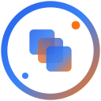

AI agents for open-source maintainers (2026)
Review bots, docs servers, testing and security agents that help maintainers keep up with issues and pull requests. We picked the top tools for 5 jobs open-source maintainers do every day: 29 tools in all, 27 of them free or with a free tier.
Jump to
Free tools from AgentScout for open-source maintainers: Agent setup generator (AGENTS.md, CLAUDE.md) · llms.txt generator
How we picked: each section takes the tools matched to that task in our directory, putting tools whose category and stated use cases fit the task first, then ordering by tracked GitHub stars. No paid placements.
Review pull requests
Agents that read diffs, leave review comments and catch bugs before a pull request is merged. All 34 tools →
- Open Code Review Open source
Alibaba's AI code review CLI that combines deterministic pipelines with an LLM agent to post line-level comments on Git diffs, using OpenAI or Anthropic models. · ★ 49,071 - GitHub MCP Server Open source
GitHub's official MCP server for letting agents work with repositories, issues, pull requests and Actions. · ★ 34,082  Qodo Freemium
Qodo Freemium
AI code review and testing agents that work in the IDE, the terminal and pull requests to catch issues before merge. · ★ 13,706 Open SWE Open source
Open SWE Open source
LangChain's asynchronous coding agent that takes work from GitHub issues, Slack or Linear, implements it in an isolated sandbox and opens a pull request. · ★ 11,146- Emdash Open source
A free, open-source agentic development environment (YC W26) for running Claude Code, Codex and other coding agents in parallel, each in its own worktree, then reviewing diffs, PRs and CI in one place. · ★ 6,120 - Redamon Open source + cloud
Open-source, self-hosted AI penetration testing framework: maps your attack surface into a graph, autonomously exploits it from a Kali sandbox with human approval gates, and opens PRs that fix what. · ★ 3,246
Write and fix code
Coding agents that write, edit and refactor code from plain-language requests, in your terminal, editor or browser. All 691 tools →
 opencode Open source
opencode Open source
OpenCode is an MIT-licensed open-source AI coding agent for the terminal, with a beta desktop app, that works with many model providers instead of locking you to one. Install it with a one-line script, npm, Homebrew, pacman, mise or Nix, then let it read your repository, edit files and run commands from a keyboard-driven TUI. · ★ 223,180- Ponytail Open source
Ponytail is an MIT-licensed skill for Claude Code and other coding agents that makes them write like a terse senior engineer: only the code a task needs, without cutting validation, error handling, security or accessibility; its published benchmark on 39 tasks reports roughly half the code, time and tokens while more risky logic ships with tests. · ★ 187,364 - Claude Code Paid
Claude Code is Anthropic's agentic coding tool that lives in your terminal, understands your codebase and carries out routine tasks, explains complex code and handles git workflows through natural-language commands. It also runs in IDEs and on GitHub when you tag @claude, and installs via a native script, Homebrew or WinGet (the npm install is deprecated). · ★ 153,919  CC Switch Open source
CC Switch Open source
Desktop manager for Claude Code, Codex, Gemini CLI, OpenCode, OpenClaw and other coding agents that switches API providers in one click and manages MCP servers, skills and prompts. · ★ 150,320
UI UX Pro Max Open source
UI UX Pro Max is an open-source agent skill that gives coding agents design intelligence for web and mobile UI, with a design-system generator that reasons over your product type and outputs matching styles, colour palettes, font pairings, layout patterns and UX rules for many frameworks. · ★ 147,219 Graphify Open source
Graphify Open source
Turns a codebase plus its docs, SQL schemas, configs and PDFs into a knowledge graph that coding agents can query. · ★ 139,123
Keep docs current for agents
MCP servers that give coding agents current, version-specific documentation, so they stop guessing at outdated APIs. All 16 tools →
 Context7 Freemium
Context7 Freemium
MCP server and platform that feeds coding agents up-to-date, version-specific library documentation. · ★ 63,949 Docmost Open source + cloud
Docmost Open source + cloud
Docmost is an open-source collaborative wiki and documentation software. It is an open-source alternative to Confluence and Notion · ★ 22,159 GitMCP Open source
GitMCP Open source
Free remote MCP server that gives agents up-to-date docs and code for any GitHub project. · ★ 8,500 Cortex Open source
Cortex Open source
Cortex is an MCP server that gives agents a way to handle generates interactive API documentation, typed SDKs, and MCP servers from OpenAPI, AsyncAPI. · ★ 3,294 Microsoft Learn MCP Source-available
Microsoft Learn MCP Source-available
Official Microsoft Learn MCP server giving agents up-to-date Microsoft documentation. · ★ 1,959 pg-aiguide Open source
pg-aiguide Open source
Timescale's MCP server with PostgreSQL docs and best practices for agents. · ★ 1,878
Test changes
Agents that write and run tests, click through your app and report what breaks. All 42 tools →
 Keploy Open source
Keploy Open source
Keploy records API traffic and turns it into isolated integration and end-to-end tests · ★ 18,913 Midscene.js Open source
Midscene.js Open source
Vision-driven UI automation and E2E testing framework where a GUI agent carries out natural-language steps on web, mobile and desktop apps. · ★ 15,441- Qodo Freemium
AI code review and testing agents that work in the IDE, the terminal and pull requests to catch issues before merge. · ★ 13,706  Shippie Open source
Shippie Open source
Extendable code review and QA agent that reads your diff, explores the codebase and posts focused review comments. · ★ 2,514 QA Agent Open source
QA Agent Open source
QA Agent is an open-source Playwright library for AI browser regression testing. An agent writes, runs, or maintains tests and reports what broke. · ★ 1,295 Hercules Open source
Hercules Open source
Open-source testing agent that turns plain Gherkin steps into end-to-end UI, API, accessibility and security tests. · ★ 1,205
Security testing
Agents that probe your app, code and smart contracts the way an attacker would: running penetration tests, red-teaming AI systems and flagging vulnerabilities with suggested fixes. All 38 tools →
 Strix Open source + cloud
Strix Open source + cloud
Open-source AI agents that run penetration tests on your app to find and help fix security vulnerabilities. · ★ 72,841 PentAGI Open source
PentAGI Open source
Autonomous multi-agent system for running penetration testing tasks. · ★ 32,771 Hexstrike AI Open source + cloud
Hexstrike AI Open source + cloud
HexStrike AI MCP Agents is an advanced MCP server that lets AI agents (Claude, GPT, Copilot, etc.) autonomously run 150+ cybersecurity tools for automated pentesting, vulnerability discovery, bug. · ★ 13,200 AI-Infra-Guard Open source
AI-Infra-Guard Open source
Tencent's AI red-teaming platform that scans agents, skills and MCP servers for risks. · ★ 7,226 Superagent Open source + cloud
Superagent Open source + cloud
SDK for AI agent safety that blocks prompt injections and unsafe tool calls, redacts PII and secrets, and runs red-team scenarios. · ★ 6,779 Agentic Bug Hunter Open source
Agentic Bug Hunter Open source
Agentic Bug Hunter is an open-source AI bug-bounty toolkit that pairs with Claude and other agents to hunt vulnerabilities across targets. · ★ 5,648
Popular searches for open-source maintainers
Other roles
- Developers
- AI engineers
- Marketers
- Sales teams
- Customer support teams
- Designers
- Artists
- Photographers
- Filmmakers
- Video editors
- Musicians and producers
- Researchers
- Data analysts
- Crypto traders
- Founders and small businesses
- DevOps and SRE engineers
- Security engineers
- Game developers
- Content creators
- QA engineers
- Data engineers
- Product managers
- Students
- Operations teams
- Startup CTOs
- Agencies
- MCP developers
- Automation engineers
- E-commerce teams
- All roles
Best-of lists for open-source maintainers
Related categories
Facts come from our directory listings; pricing is as each maker states it and can change. Missing a tool? Submit it free.